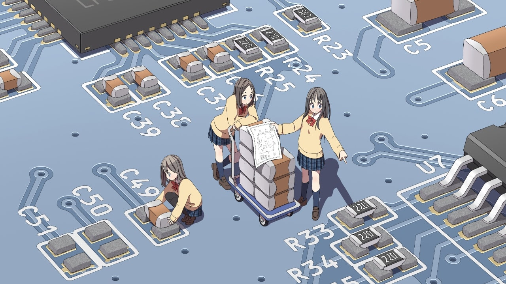
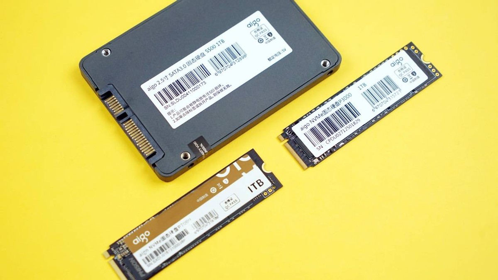
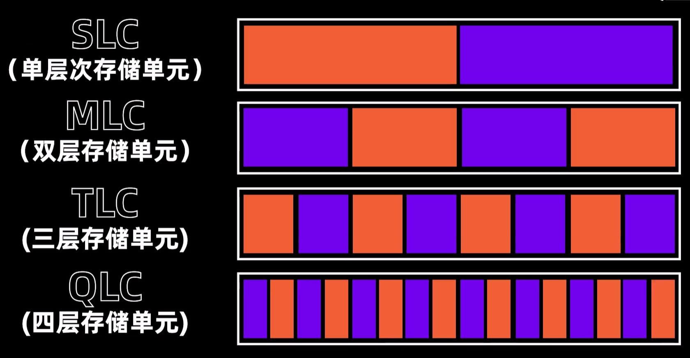
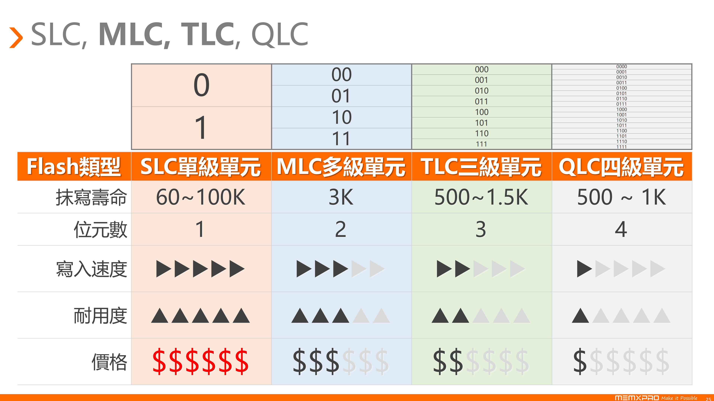
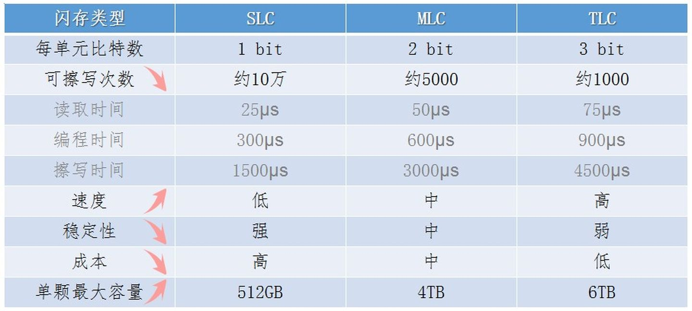
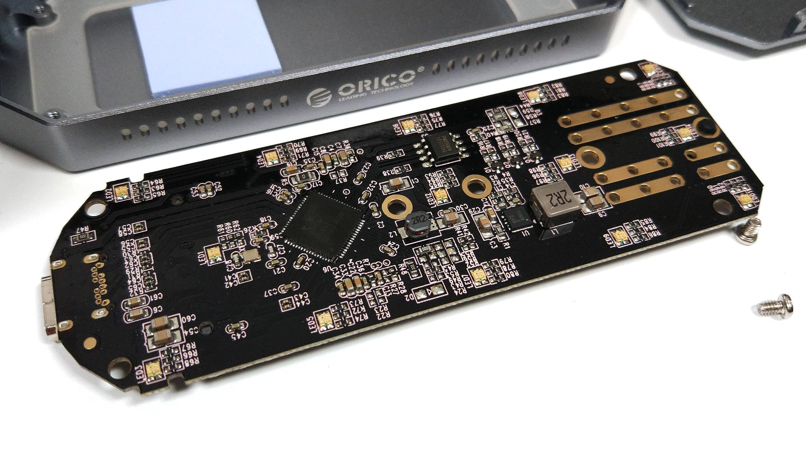

还是那就老话，根据自身实际情况，进行选购！
探索速度潜能，突破传输边界，都是各家移动硬盘盒常用标语，但是我们应该如何选购自己需要的移动硬盘盒呢？

1. 笔记本硬盘
来看看哪款才是现阶段最值得购买的硬盘
4KB 随机 7 读 3 写 来测试硬盘的实际表现性能最为合适，因为日常使用当中，读的次数明显多余写入的情况，但是也不能只根据这个机型选择。

1.1 机械硬盘
机械硬盘已经是夕阳行业的产物，基本上现在做到现有技术极限！
如果你只是拿硬盘来当仓库盘存储数据的话，4TB 的应该就可以了，可以多买几块组装成一个家用存储方案，不差钱的可以直接购买群辉的机器，一步到位。
- 家用级硬盘
- 叠瓦式、
5400转 4TB在500块左右，推荐希捷酷鹰(老款 007 编号)
- 叠瓦式、
- 监控级硬盘
- 垂直式、
5400转 4TB在500块左右
- 垂直式、
- NAS 硬盘
- 垂直式、
7200转 4TB在799块左右
- 垂直式、
- 企业硬盘
- 垂直式、
7200转 - 能买垂直式就不要买叠式
6TB在1000块左右，推荐西数企业硬盘
- 垂直式、
1.2 固态硬盘
来看看哪款才是现阶段最值得购买的硬盘
固态硬盘(SSD)是一种以集成电路制作的电脑存储设备，虽然价格及最大存储容量与机械硬盘仍有差距，但固态硬盘已经可与机械式硬盘竞争，固态硬盘常采用 SATA、PCI、M.2 等接口。可以用非易失性存储器作为永久性存储设备，也可以用易失性存储器作为临时性存储设备。
- 硬盘优点
- 读写速度远远优于机械硬盘、无噪音、抗震动、平均功耗低
- 硬盘缺点
- 高昂成本、写入次数、读取干扰、损坏时的不可挽救性及掉速
1.3 内存条
内存条是什么？内存条有什么用？
在现在计算机当中，CPU 只是一个会加减乘除、对数据进行搬运、会对比大小的工具人， 它的一切操作都是把数据从内存的一个地方进行简单计算之后再放到内存的另一个地方，所以如果说 CPU 是一个勤劳的工人，那么内存就是整个工地，所以内存也是影响 CPU 使用的关键。
在 1970 年，intel 发布了首款可以商用的 DRAM 内存 intel 1103，它与今天使用的内存条架构类似，只不过它的大小只有 1kb，需要的工作电压为 16V。之后就有了，我们的熟知的 DDR1 到最新的 DDR5 代。而且内存的每次更新迭代，性能、容量都会成倍的增长，但是所需要的电压确实在逐步的降低。
随着内存条工作频率的提升，内存条的时序自然也会越来越大。不过对于体质好的颗粒来说，它们从家走到公交车站的时间会更短，所以错过的公交出次数更少，就可以说它们的内存时序和颗粒延迟越低。
# 内存条颗粒延迟
时序CL
---------------- = 颗粒延迟(从家走到公交车站的时间)
内存条实际时钟频率
# 内存条颗粒延迟
时序X2000
---------------- = 颗粒延迟(从家走到公交车站的时间)
内存条频率
随着 DDR5 内存条频率的提高，导致 CPU 处理不及时，这时就出现了 内存分频 这概念。其好处是可以发挥出 大带宽高性能的优势，但是数据的延迟会稍微高一点。那么每一代内存又是如何做到性能翻倍的呢？ 翻倍的性能提示主要是由内存条的 突发传输长度 来决定的，而突发传输长度就是可以让 CPU 同时通知的个数。



而且需要注意的是，随着内存条迭代的版本不同，对应的防呆口也是不一样的，也就说版本不通用，所以旧电脑使用新内存条是不可以的(大力出不来奇迹，只会报废)。
2. 移动硬盘盒
详细讲解移动硬盘盒的选购技巧
把多余的硬盘装到硬盘盒，确实是一件特别省钱且高效的办法。苹果 Mac 笔记本用户，使用外接移动硬盘来给笔记本扩容，也是一个非常省钱的办法(毕竟128G/256G不够用)。那么如何选择质量不错且价格合适的移动硬盘盒呢？

2.1 常见分类
简述下，移动硬盘盒的分类和选择购买！
选择硬盘盒要更加自己手上或准备入手的硬盘类型，以及你的电脑 USB 接口支持多块的传输速率，来进行移动硬盘盒的初步选择。
- 2.5 英寸的机械硬盘
2.5英寸的移动硬盘盒(2.5"STAT)- 最常见且价格最便宜(速度慢/
5G足够) 2.5英寸、USB3.0、5Gbps(450MB/s；1GB文件3秒传)- 建议挑选
Type-C接口的移动硬盘盒，选择好看的就行
- 2.5 英寸的固态硬盘(SSD)
2.5英寸的移动硬盘盒(2.5"STAT SSD)- 这种应该的极限速度在
560MB/s左右 2.5英寸、USB3.1 Gen2、6Gbps(刚刚合适；1GB文件2秒传)
- M.2 格式的固态硬盘(SSD)
- 有很多种类，包括支持雷电
3/4、USB3.2、STAT、NVME等 - 传输速率有，
6Gbps、10Gbps、20Gbps、40Gbps、50Gbps等 - 其中
6Gbps(两个缺口的硬盘)，一般价格在60块左右 - 其中
10Gbps推荐购买，速度在1G/s，兼容好(接口)，价格在100块 - 其中
20Gbps不购买，速度在2G/s，兼容不好(接口)，价格在200块 - 其中
40Gbps不购买，速度在4G/s，兼容不好(USB4/雷电4)，价格在800块
- 有很多种类，包括支持雷电
2.2 主控选择
简述下，市面上主流的移动硬盘盒的主控！
因为机械硬盘速度不高，所以建议挑选 Type-C 接口的移动硬盘盒，选择好看的就行。而对于高速硬盘来说，就需要选择比较好的主控和散热(撞墙)了。
最好是选择带有主动风扇的移动硬盘盒(虽然选择的少了些；价格也相对来说贵一些)，其次是选择外壳和主控可以分离的设计(这样可以贴导热帖；全程不掉速)，抽拉式设计十分尴尬。
然后就是看硬盘盒的主控芯片了，主控就像一个翻译，能够将硬盘的 NVME 协议或者 SATA 协议翻译成 USB 协议，所以主控可以应该硬盘盒的稳定性、安全等问题。常见的主控芯片中，JMS583 最好，RTL9210、RTL9210b 也凑合。
如果你是想使用 20Gbps移动硬盘盒，没得选，因为市面上基本都是 ASM2364 的主控，这个主控有个问题就是温度很高，而且会掉速。所以，选择 20Gbps 的硬盘盒就需要选择带主动降温(内置散热风扇)的。
如果你是想使用 40Gbps 移动硬盘盒，没得选，只能够使用 JHL 7440 的主控。但是这个主控不能再普通的 USB 和 Type-C 接口上面使用，只能在雷电 3/4、USB4 的接口上面使用。所以，为了解决这个兼容问题，一般会采用双主控的方案，就是再加一个支出普通接口的主控。
此外，RTL9210、RTL9210b 的主控有一个 Bug，就是及时我们正常退出了硬盘，也会累积一次不安全推出的次数(虽然不影响使用)。一般等待 10min 之后，等应该处于休眠模式之后，在安全退出就可以避免了。
2.3 购买指南
教你选择最适合自己的且质量不错的移动硬盘盒
Windows 的用户需要注意，在第一次使用移动硬盘盒的话，建议在 计算机磁盘管理 里面，随便选择一个磁盘，在属性、硬件中选择你的移动硬盘，在属性、策略当中，选择 更好地性能 并 启用设备上的写入缓存，能够发挥硬盘的更好性能。
而 MacOS 用户的话，可以在 磁盘工具 中把格式改为 ExFat 后，直接就是最大性能了，基本可以跑完 10Gbps 的最大性能了。
- 机械硬盘买便宜的有
type-C接口的就行 - 机械硬盘的主控
JMS583最好，RTL9210、RTL9210b也凑合 SATA固态硬盘买6Gbps(1GB文件2秒传；两个缺口) 带宽的硬盘盒M.2_NVME硬盘建议买10Gbps的，尽量避开抽拉式的硬盘盒，散热不太好20Gbps的硬盘盒不太建议买，电脑支持20Gbps的接口太少，对散热要求也高40Gbps的硬盘盒建议苹果电脑用户选择，windows用户用起来性价比不高
3. 参考链接
送人玫瑰，手有余香！